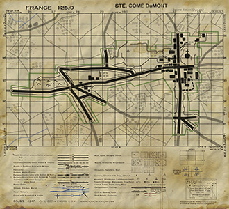

Date: June 8th, 1944
Time: 7:45am
Game mode:
This is a push gameplay map. Allies have to take all capture zones, while the Axis have to hold out with at least one zone for the time of one round.
Objectives:
Allies: Have to work their way up onto he hill near the “Corner” and hold it against the escaping germans. Eventually they are to liberate Ste. Côme du Mont, if they can.
Axis: Must hold the “Corner” so they can escape to Carentan via the road N13 as soon as the Allies run out of reinforcements.
Both teams need to capture all nodes and hold them for at least one minute to win the map.
History:
On June the 8th an american battalion attack was launched against St. Côme du Mont. Under the command of Colonel Julian Ewell the 501st reoccupied the “Dead mans Corner”. Moving to Carentan was impossible as the causeway was defended by small arms and a 88 that was zeroed in into that area, so he gave up the plans to move there but went back to the “Corner”. There they were attacked by escaping germans coming through the hedgerows who also attacked the buildings there. Eventually the allied paratroopers cleared the hill and the hedgerows, holding that area for the rest of the day.
The germans already had given up their plan to escape this way but now tried to leave Ste. Côme du Mont and left west to the railroad line near La Croix. Later the 401st arrived and the allied forces discovered that all german forces had left Ste. Côme du Mont already.
Designed By: Stefan Bermig